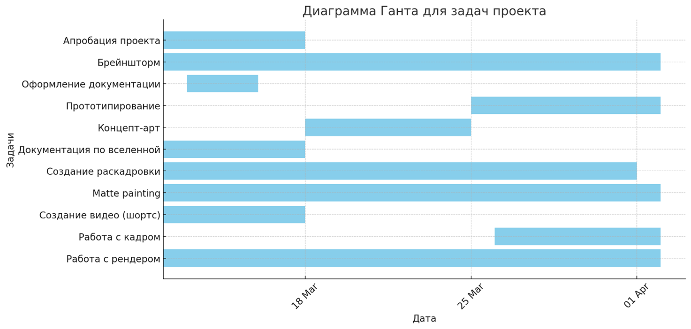

Исследование влияния цифровых технологий на современное и будущее образование
Здесь вы можете отслеживать прогресс в работе нашей команды и найти для себя много интересного по тематике мульт.сериала
Пока наша команда увлеченно работает над новой серией, предлагаем вам погрузиться в тему проекта с помощью данных статей или посетить наш YouTube-канал 😉. До скорой встречи!
Диаграмма Ганта позволяет наглядно увидеть прогресс реализации проекта и продвижение по созданию обучающего контента.
Дорожная карта помогает планировать и отслеживать продвижение работы по проекту, фиксируя все этапы и успехи.